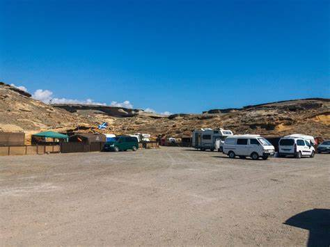

Parcelas para Tiendas y Autocaravanas
Disfruta de la naturaleza y la comodidad en nuestras parcelas diseñadas para tiendas y autocaravanas. Cada parcela está equipada con todos los servicios necesarios para garantizar una estancia agradable y relajante.
